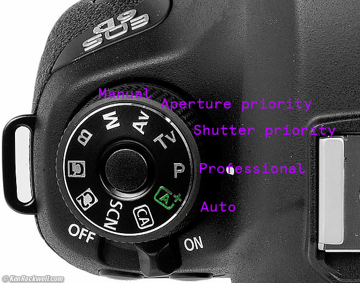
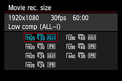

Shooting Digital Video
EF 24-105mm f/4L IS USM Lens
This easy-to-use standard zoom lens can cover a large zoom area ranging from 24mm wide-angle to 105mm portrait-length telephoto, and its Image Stabilizer Technology steadies camera shake up to three stops.
 Basic controls
Zoom & focus
Menu
Basic controls
Zoom & focus
Menu

ISO
Light sensor sensitivity
Understanding ISO
In general, low ISO is better, there will be less noise in the picture.
Shutter speed
Lenth of time shutter is open, light is exposed
Range 1/4000 sec to 30 seconds
Frame rate vs. shutter speed
Generally, shutter speed should be twice the framerate.
File settings

For shooting video, we want to use 1080p (1920 x 1080 pixels)
Audio
Audio is an important part of any video project. The Canon 6Ds have built in microphones, but the quality is not great. You will want to record audio with an external mic or recorder.
External recording with Tascam recorder
Make sure to use syncing clap or sound
Plan your shoot
- Location
- Times
- Shot list
- Equipment
- Camera
- Audio recording
- Lighting (indoor/outdoor/other lights)
- Batteries! (and chargers!)
- Cables!
- Tripod
- Headphones
- Data - SD cards - you may need an external hard drive or backup cards, memory will get taken up quickly
- Playback (computer)